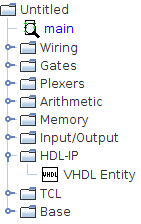

Сущность VHDL
Сущность VHDL — это компонент, внутреннее поведение которого описывается программным кодом на языке VHDL. Среда Logisim предоставляет встроенный текстовый редактор, предназначенный для написания, изменения и валидации HDL-кода (при условии, что в системе установлен и настроен внешний инструмент моделирования Questa Advanced Simulator).
Создание сущности VHDL
Чтобы создать новую сущность VHDL, откройте библиотеку | HDL IP | на панели навигатора и выберите элемент Сущность VHDL. Если данная библиотека отсутствует в вашем проекте, её необходимо загрузить: перейдите в главное меню | Проект | > | Загрузить библиотеку | > | Встроенная библиотека | и выберите пункт | HDL IP |.

Редактирование сущности VHDL

По умолчанию вновь созданная сущность VHDL содержит базовый шаблон с двумя входными и двумя выходными портами. Чтобы перейти к редактированию её исходного кода, выделите компонент на холсте и дважды щёлкните по значению атрибута Содержимое в панели свойств.

Встроенный HDL-редактор позволяет изменять код напрямую. Вы также можете импортировать готовый внешний код, нажав кнопку Импорт…, или сохранить текущие наработки в файл с помощью кнопки Экспорт….

В процессе редактирования становится активной кнопка Проверить содержимое. Она запускает внешнюю компиляцию кода, если в системе настроен Questa Advanced Simulator (подробнее см. раздел Настройка Questa Advanced Simulator). Внешняя среда производит полный синтаксический анализ: в случае обнаружения ошибок компиляции откроется диагностическое окно с подробным логом. Если код корректен, кнопка заблокируется до внесения следующих изменений.
Примечание: Если Questa Advanced Simulator не установлен или отключен, Logisim выполнит лишь базовый внутренний парсинг, проверяющий исключительно синтаксис объявления портов ввода-вывода.
После завершения работы над кодом нажмите кнопку Закрыть окно. Редактор выполнит финальную проверку через QuestaSim, после чего Logisim автоматически перестроит условное графическое обозначение (УГО) компонента на схеме, добавив, удалив или переименовав соответствующие контакты портов.
Если при закрытии окна обнаруживаются синтаксические ошибки, Logisim заблокирует обновление УГО и выведет предупреждение, предлагающее три варианта действий:
- Принудительно закрыть редактор с отменой изменений: при нажатии кнопки Да окно закроется, но все правки, внесенные с момента последней успешной сборки, будут безвозвратно утеряны.
- Вернуться к редактированию: при нажатии кнопки Нет вы вернётесь в редактор для локализации и исправления ошибок в коде.
- Создать резервную копию: при нажатии кнопки Создать резервную копию система позволит сохранить аварийный VHDL-код во внешний текстовый файл на диске, после чего закроет редактор.
Использование сущности VHDL
На чертеже схемы сущность VHDL ведет себя как стандартный библиотечный компонент — её можно соединять проводниками с другими элементами и триггерами. Единственное ключевое отличие заключается в механизме её фоновой обработки логических уровней в процессе моделирования. Подробное описание этого механизма приведено в разделе Моделирование VHDL.